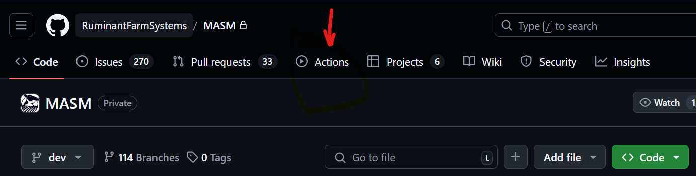
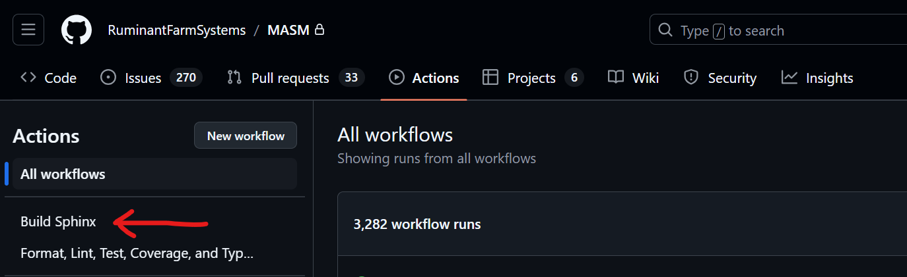
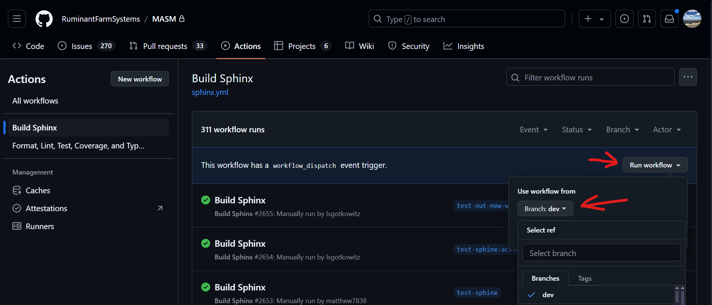
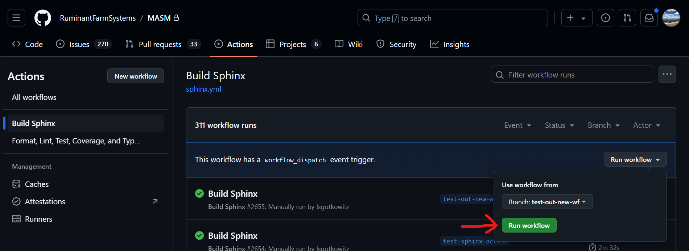

Using Sphinx#
What and Why#
We use numpy-style docstrings to document the codebase. This allows us to use Sphinx which turns a documentation structure written reStructuredText (reST) files to compile HTML and Latex (and subsequently, PDF) documents from our docstrings.
In order to sync up documentation between the docstrings and the codebase, both the reST files and HTML/Latex files need to be regenerated. These are very different processes, and do not always need to be done at the same time. See the “When” section for an explanation of when each needs to be regenerated.
When#
The reST files determine the structure of documentation (how different pages of the documentation are connected to one another), but they do not directly effect the actual contents of the HTML and Latex pages. That is determined by the contents of the docstrings in the codebase.
NOTE: As of Feb. 10, 2025 there are some reST files that do directly effect the context of HTML and Latex files generated with them. They are legacy scientific documentation and were written manually. They will likely be removed at some point as part of the scientific documentation rewrite that is currently happening, but until then they can be ignored when regenerating the reST files.
As a rule of thumb, the reST files do not need to be updated unless files are added or removed from the codebase. If the docstrings in a file are updated, then it may be appropriate to update the HTML and/or Latex Documentation. See the “reStructuredText” and “HTML” sections of this wiki pages for instructions to regenerate the reST and HTML files, respectively.
If both reST and HTML/Latex files are being regenerated, it is important to do the reST files first, then the HTML and/or Latex files.
How#
reStructuredText#
The reST files can be automatically generated with the
`sphinx-apidoc <https://www.sphinx-doc.org/en/master/man/sphinx-apidoc.html>`__
command, an extension of Sphinx.
Run the following command from the root of the project directory to regenerate the reST files:
sphinx-apidoc -f -o docs/ . tests --maxdepth=1 --separate
An explanation of what the arguments to sphinx-apidoc are and what
they do:
-f: “force”; this command overwrites existing reST files based on what it finds in the codebase.-o docs/: path where the new reST files should be written to..: path to the modules and packages that reST files will be generated/regenerated for.tests: path the modules and packages that reST files will not be generated/regenerated for.--maxdepth=1: when the subpackages and submodules are listed, this determines whether their subpackages and submodules are also listed in the page.--separate: instead of listing all the documentation of modules from the same directory next to each other, this argument gives each module a separate page for its documentation.
HTML#
Automatic#
Sphinx can be run via a GitHub Action on a pull request, but it must be manually triggered on a target branch. If the documentation is going to be updated, this is the recommended way of doing it because it ensures that it will be updated in the same way every time. Here are the steps for using the Sphinx workflow:
Create a new branch and make a pull request with it.
Navigate to the “Actions” tab of GitHub.

Click on “Build Sphinx” on the left-hand side of the page, underneath “All workflows”.

Click “Run workflow” and then select the branch associated with your pull request in the drop down.

After selecting the desired target branch, click the green “Run workflow” button underneath the branch-selector drop down.

After the workflow has finished running, navigate back to your pull request. There will be a new commit on with the message “Update Sphinx Documentation” and the rebuilt documentation files will be listed under the “Files changed” tab.
Manual#
To preview Sphinx’s output locally before submitting a pull request, go
to the docs directory at the repository’s root. Here, you’ll find a
batch file called make.bat. Executing this file will activate Sphinx
and compile the documents according to specified parameters.
Note#
The method to execute batch files can vary across different operating
systems and runtime settings. For example, on MS Windows, the command
./make html will generate HTML files, while ./make latexpdf will
produce Latex files.
Where are the generated files?#
Under the same docs folder, navigate to /_build/html to see
generated HTML files.
index.htmlis the entry to the entire HTML pages.RUFAS.htmlis the entry to the RUFAS codebase.
Alternatively, you can open other HTML files, they are mostly HTMLs for all the different subpackages.
Note#
If you generate Latex documents, the output is in /_build/latex with
a similar pattern.